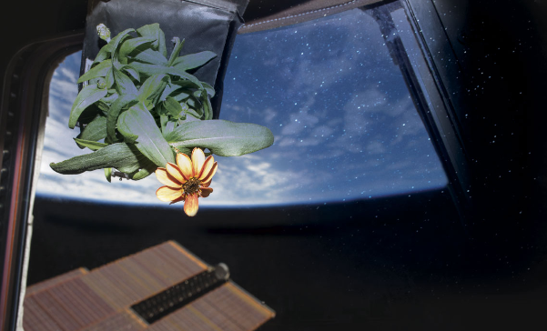

Crescimento de plantas em microgravidade

Ao longo do experimento, os cientistas monitoram o crescimento das plantas, observando como elas se desenvolvem em um ambiente sem a influência da gravidade. Isso inclui observar o crescimento das raízes, a germinação das sementes, o desenvolvimento das folhas e flores, bem como o comportamento de fototropismo (o movimento das plantas em resposta à luz) em um ambiente de microgravidade.